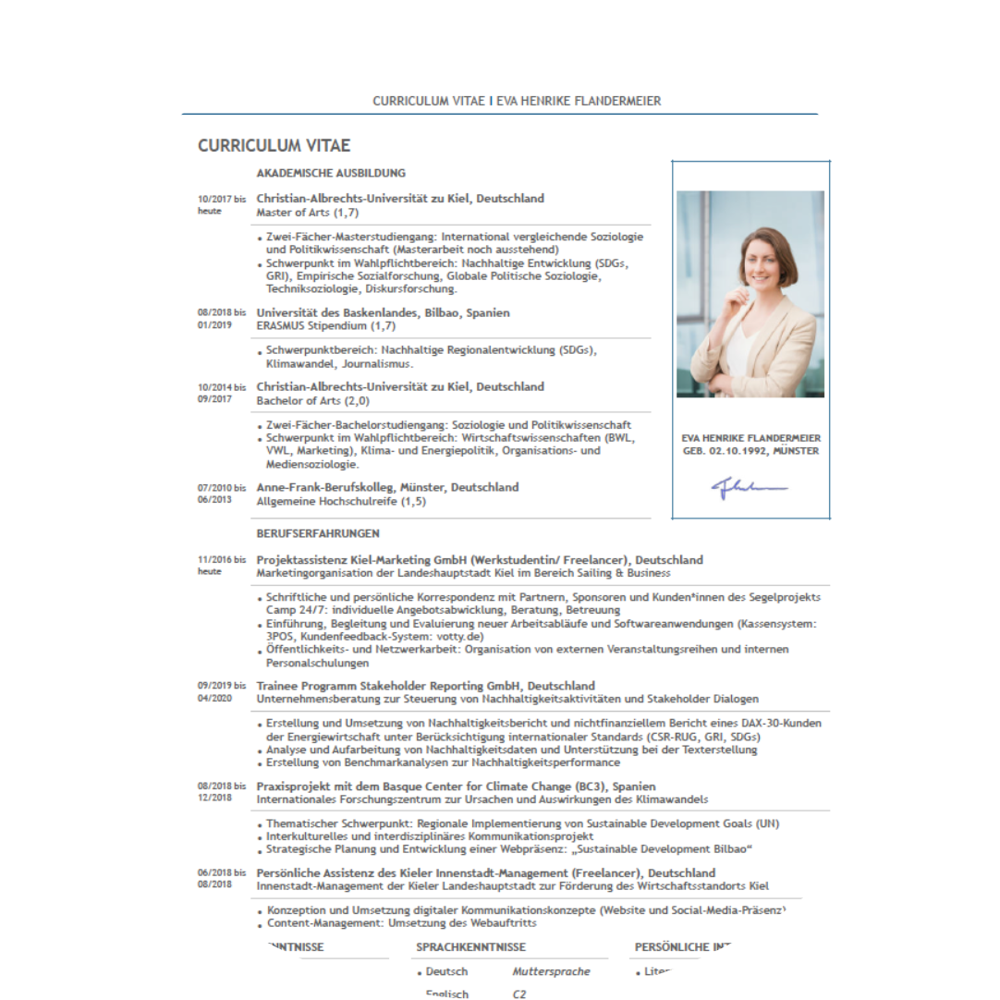
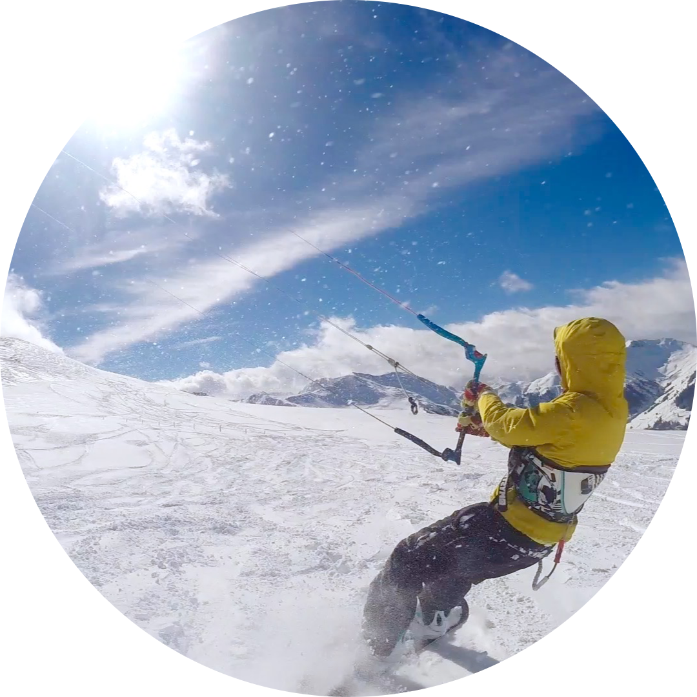
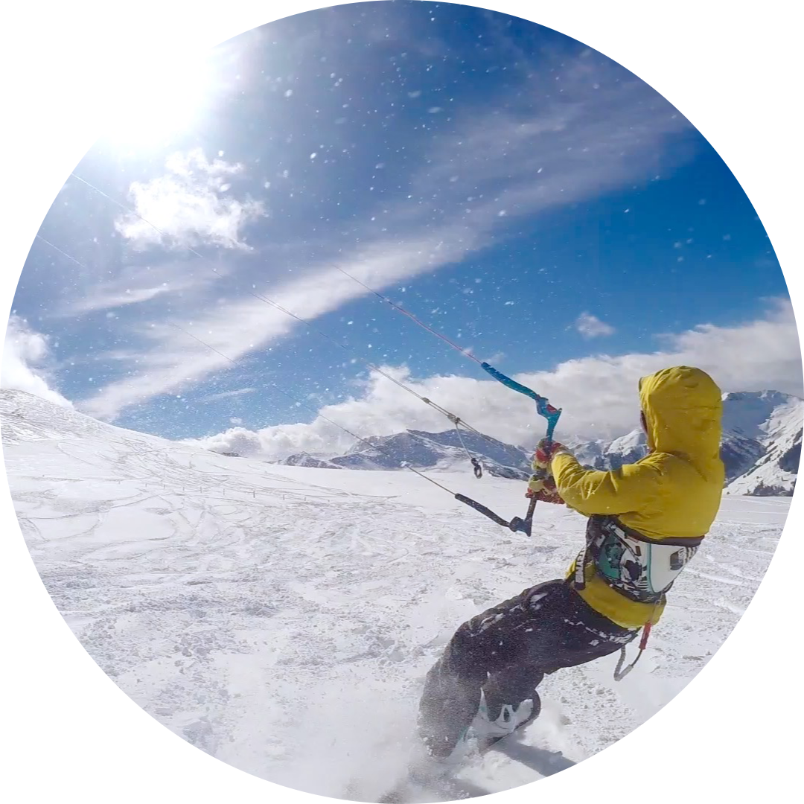
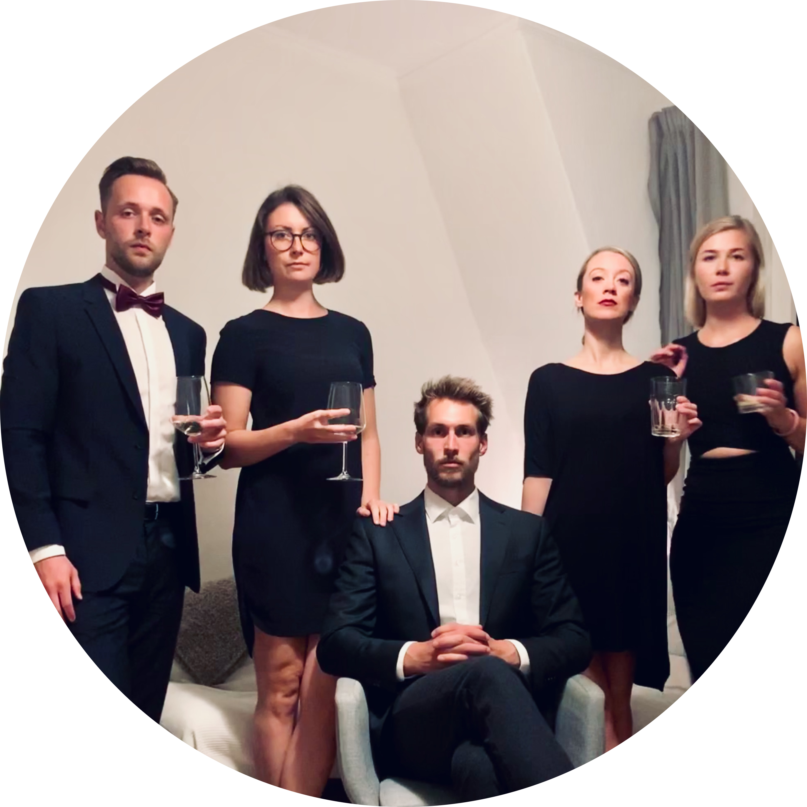

Young Professional
Here I give a short overview of my academic and professional background, my passions and needs. This is of course only a selected glimpse of my life.
Curriculum Vitae - Academic background.
 I am a passionate social scientist. What fascinates me so much? The essence of social sciences is to put things into a larger context. Since my first semester, I have been particularly interested in sustainable development and digitization. Both areas are characterized by contradictions, complexity and dynamics. At the beginning of my studies both areas were niche topics, now they are on top of all agendas, rightly so!The essence of the social sciences is to put things into a larger context. Since my first semester, I have been particularly interested in sustainable development and digitization. Both areas are characterized by contradictions, complexity and dynamics. At the beginning of my studies both areas were niche topics, now they are at the top of all agendas, rightly so! At the moment I am working on my last academic project, my master thesis, which I wrote together with my partner in the context of 'subjectivation processes through algorithms'.The essence of the social sciences is to put things into a larger context. Since my first semester, I have been particularly interested in sustainable development and digitization. Both areas are characterized by contradictions, complexity and dynamics. At the beginning of my studies both areas were niche topics, now they are at the top of all agendas, rightly so!At the moment I am working on my last academic project, my master thesis, which I wrote together with my partner in the context of 'subjectivation processes through algorithms'.
Curriculum Vitae - In a nutshell.
Work Experience
| Date | Jobs |
|---|---|
| 09/2019 - 04/2020 | Trainee program - Stakeholder Reporting GmbH |
| 06/2018 - 08/2018 | Project assistance - City Center Management Kiel |
| 11/2016-09/2020 | Project assistance - Kiel Marketing GmbH |
Studies
| Date | Academic steps |
|---|---|
| 10/2017 - until today | Kiel University (CAU) - Master of Arts |
| 08/2018 - 01/2019 | University of the Basque Country (UPV) - Semester abroad |
| 10/2014-09/2017 | Kiel University (CAU) - Bachelor of Arts |
A freedom lover - In a nutshell.
My passions:

 

My (daily) needs:

Regrets of the dying
1. I wish I had spent more time with the people I love.
2. I wish I had worried less.
3. I wish I had forgiven more.
4. I wish I had stood up for myself.
5. I wish I had lived my own life.
6. I wish I had been more honest.
7. I wish I had worked less.
8. I wish I had cared less about what other people think.
9. I wish I had lived up to my full potential.
10. I wish I had faced my fears.
11. I wish I'd stopped chasing the wrong things.
12. I wish I'd lived more in the moment.